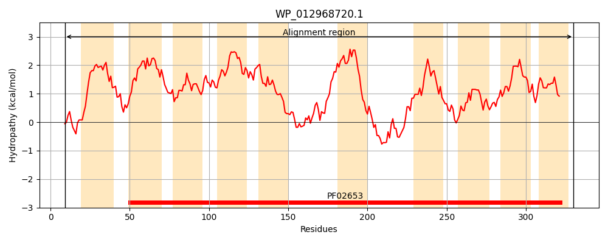
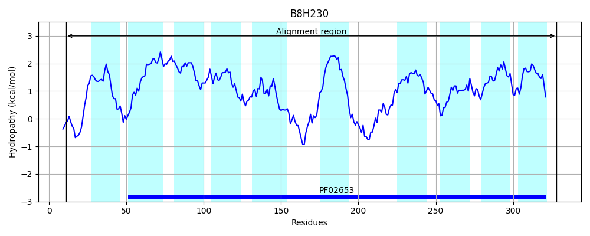
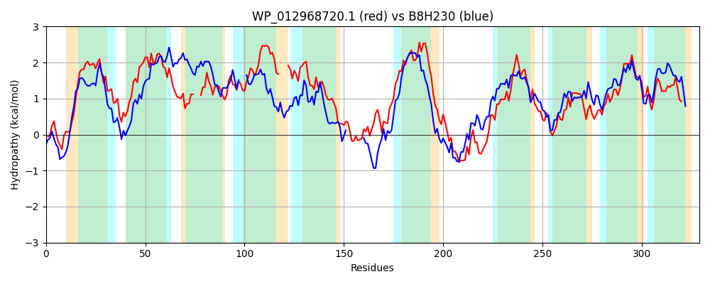

Hit Accession: B8H230
Hit TCID: 3.A.1.2.21
Hit Description: gnl|BL_ORD_ID|2113 gnl|TC-DB|B8H230|3.A.1.2.21 Inositol ABC transport system, permease protein IatP OS=Caulobacter crescentus (strain NA1000 / CB15N) GN=iatP PE=4 SV=1
Mach Len: 329
e:0.000000
Query TMS Count : 10
Hit TMS Count: 10
TMS-Overlap Score: 8.200000
Predicted Substrates:CHEBI:10601;myo-inositol
BLAST Alignment:
Score: 488 , Bit scores: 192 bits, E-value: 5.2e-59, Alignment length: 329, Percentage identity: 36
Query: 9 ATVSGRQRFFDFLYKWGMLLTVVLLVAVFGLASDNFLDPFNIINILRSIAIVTVIAIGVSISLTIGGFDLSVGST---ASLANALVISLFVWHGLGTTEAILITLALCTLVGLFNAFL----IVVLRIPDMLATLASLFVIQGVAMTYSYGGSITENMVLPSGEMAEGTIPAGFGALGQVPTIVIIMLVVTLVAQLALSFTTHGRRMYAIGGNPEAARLSGLRITRYKVAAYVIASLLAGLGGILLASRIGSSQVNAGGGYLMDAVAAAWIGFSLAGSGKPNALGTLVGAVILGVLSNGLVMLSVPYYAMDIIKGLVLAGALALTYFQR 330
AT R F K +L ++LLVAVFG A++ FL N +NIL ++I +IA+G++ + IGG D++VGS AS+A A V++ V G T LI L + TL+GL ++ + L +P + TL + V +G + + GG P + G G + +P V+I +V +AL +T +GR++YA+GGN EAARLSG+ + + Y I LAGL G LL++R+GS++ AG GY + +A+ IG + G GT++GA+++GVLSNGLVML V Y ++ GL++ A+A ++ R
Sbjct: 11 ATDKPRFDLLAFARKHRTILFLLLLVAVFGAANERFLTARNALNILSEVSIYGIIAVGMTFVILIGGIDVAVGSLLAFASIAAAYVVTAVVGDGPATW---LIALLVSTLIGLAGGYVQGKAVTWLHVPAFIVTLGGMTVWRGATLLLNDGG--------PISGFNDAYRWWGSGEILFLPVPVVIFALVAAAGHVALRYTRYGRQVYAVGGNAEAARLSGVNVDFITTSVYAIIGALAGLSGFLLSARLGSAEAVAGTGYELRVIASVVIGGASLTGGSGGVGGTVLGALLIGVLSNGLVMLHVTSYVQQVVIGLIIVAAVAFDHYAR 328 | Protein Hydropathy Plots: |
|---|
|  |  |
Pairwise Alignment-Hydropathy Plot:
|
|---|
|  |